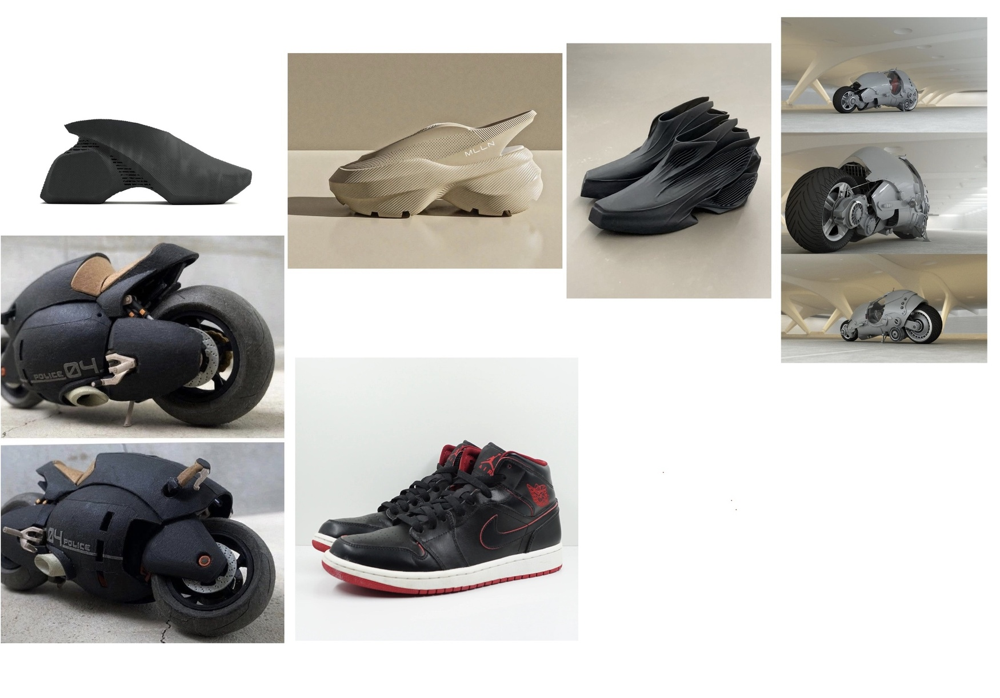
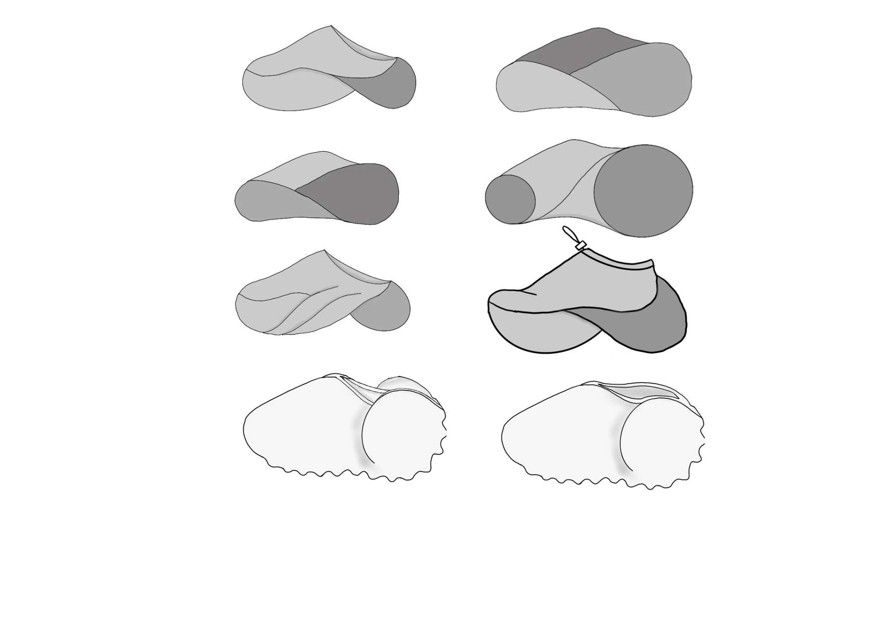
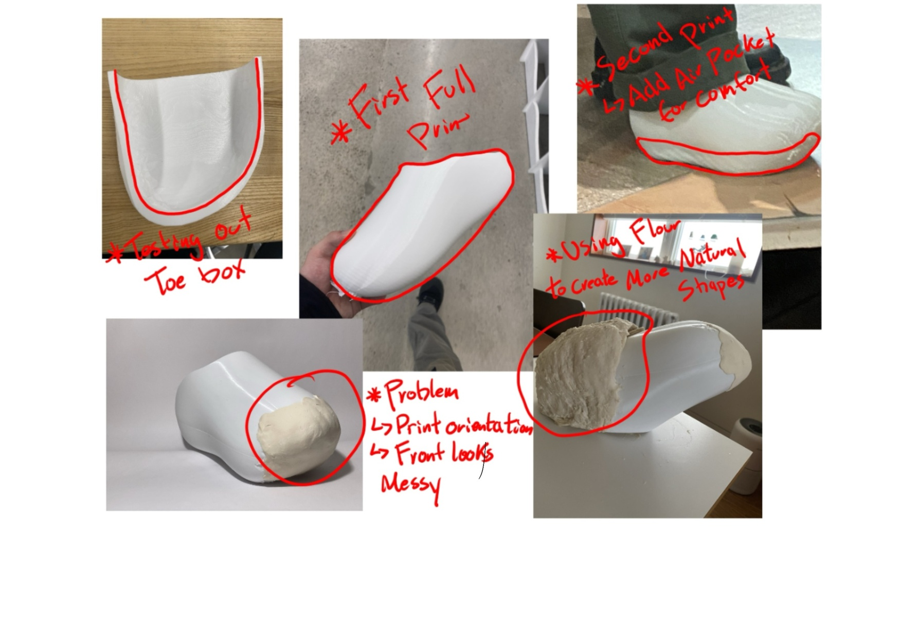
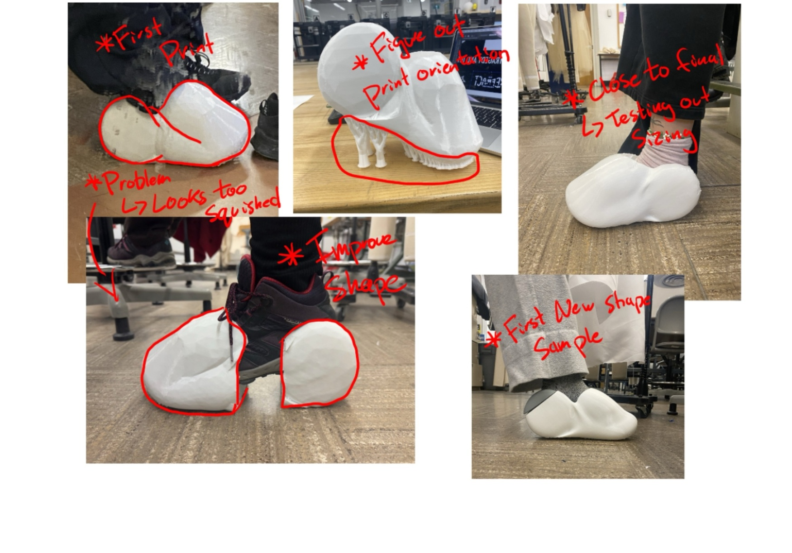
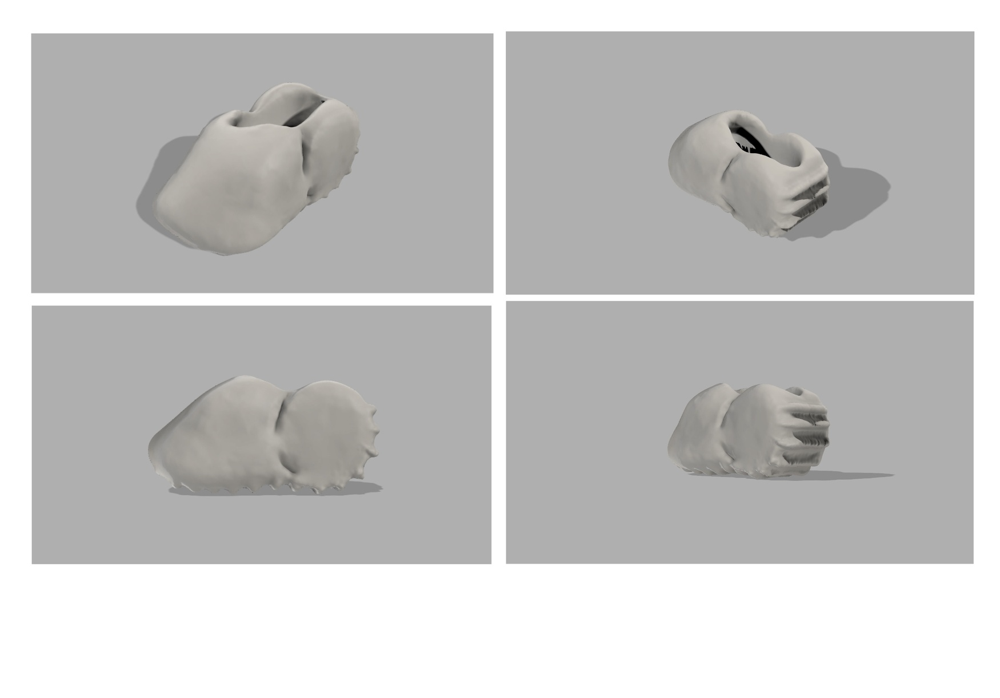
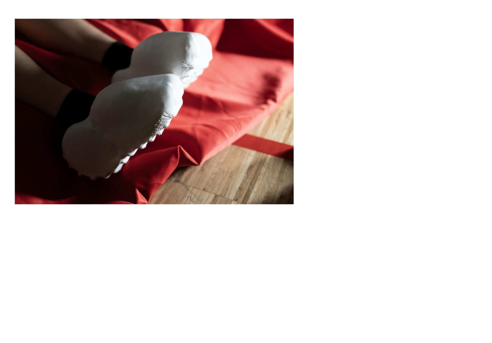
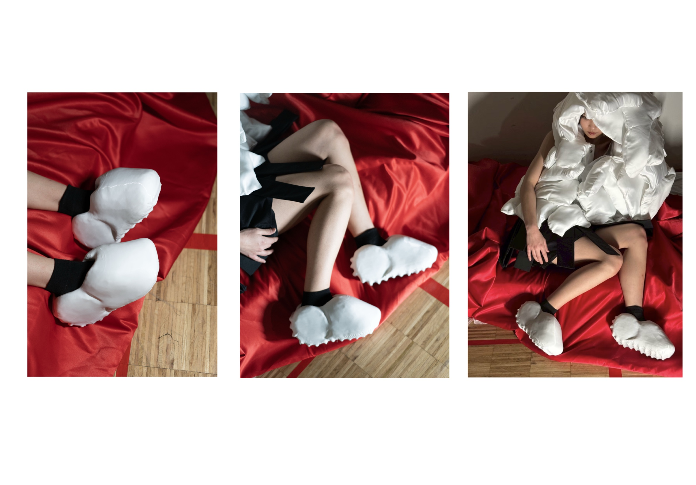

Design Idea

Shoes were chosen for multiple reasons. The first was personal interest. My introduction to fashion began with sneakers — the storytelling, marketing, design, and emotional connection I experienced when wearing new shoes was the first time I understood fashion as more than clothing. This project became an opportunity to return to that starting point.
The second reason was practical. During graduate collections, many designers purchase shoes for their models. I also found that many students struggled to find footwear that matched their collections. Designing my own shoes allowed me to create something cohesive with the collection.
Finally, this project became an opportunity to explore CAD as a design tool. While developing the collection, I learned CAD software and wanted to challenge myself by applying it to footwear — a medium I had not previously designed in.
The first pair of sneakers I bought that got me hooked to sneakers and shoes
Sketches

Process

The first step was determining the foot last. I sourced one online, but the measurements felt inaccurate, resulting in a very snug fit. Multiple tests and adjustments were conducted to refine the proportions and improve comfort.
The next challenge involved the sole. The shoe lacked a midsole, making it difficult and uncomfortable to walk in. Several solutions were explored, including adding a small unprinted pocket within the sole to create an air cavity, similar to the concept used in Nike's Air technology.
Another challenge was developing volume in the upper. To achieve a more organic shape, I experimented with creating clay-like forms using a mixture of water and flour. This allowed me to explore new silhouettes, but the results were ultimately unsuccessful and difficult to translate into the final design.

After establishing the base of the shoe, the next step was to explore different design variations. Multiple concepts were tested, including a two-part construction, a smooth non-textured surface, and a more geometric form.
Another challenge was determining the optimal print orientation. Removing supports cleanly proved difficult, as they often damaged the surface and required extensive cleanup. Various orientations were tested to minimize support contact and improve print quality, followed by sanding to refine the final surface finish.
CAD Render

Final

The final design drew inspiration from the motorcycle forms in AKIRA, incorporating a large tire-like shape at the back of the shoe. After wear testing, concerns about traction emerged. To address this, I looked to motorcycle tires and developed a tread pattern for the outsole.
The print orientation was also refined to keep the upper surface smooth and free from support marks. Cushioning was improved by increasing the printed volume around the sole while lowering the infill, creating a softer and more responsive feel when walking.
